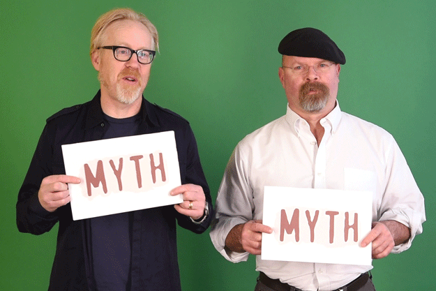
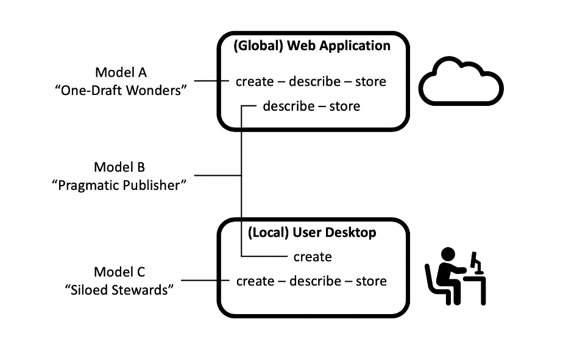
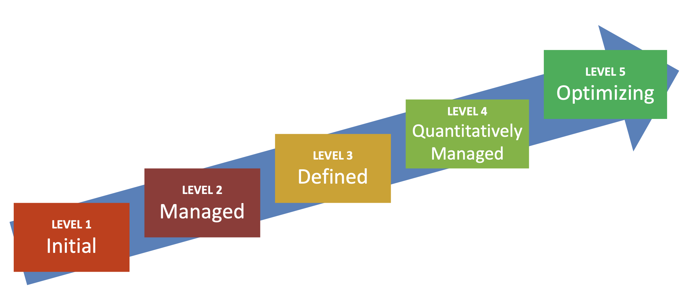
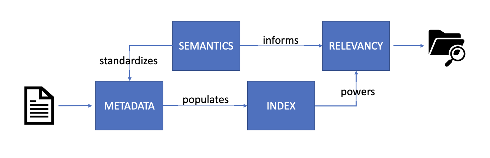

KNOWLEDGE MANAGEMENT: MYTHS & METHODS
A short guide to replacing KM fiction with fact for consultants & clients
Hi, I'm Camille 👋
|
* Federally-Funded Research & Development Center
Objectives
Attendees will leave this talk with a better understanding of how to:
|
Flying out of SFO... |
KM work & consulting
is full of myths
Like all myths, they usually start from a kernel of truth
Our task
Communicate in a way that is sensitive to myths while implementing real change using proven methods
Myth #1: The Quick Fix
"If we install [insert name here] KM software, that is the same thing as doing KM."
Response
Technology is only ever a KM enabler; the presence of a certain software does not equate to "doing KM" in the same way that owning a bread machine does not make you a bakery.
Method: Define best use
of current tech in strategy
|
Example: Functional mapping
Unambiguously determining critical knowledge worker functions =
a more accurate understanding of the constaints of the info environment
Myth #2: The Platonic Ideal
"KM strategy is one-size-fits-all, and reliably produces a certain endstate when executed well."
Response
If properly embedded, KM is a continuous improvement, not an external checklist. The "done"-ness of KM strategy is a spectrum, not a binary.
Method: Build in audits using
maturity models

Based on Capability Maturity Modeling
Myth #3: Hero Worship
"KM strategy is transposable. If we just copy FAANG, we'll have a roadmap for good KM."
Response
KM strategy is transferrable. We can learn from FAANG* & others, but institutional priorities will determine what is implemented and how.

* Shorthand for "Facebook Amazon Apple Netflix Google"
Method: Benchmark & baseline
- Benchmarking can be in-depth or basic, using primary or secondary research, but should focus on peers
- Insist on a clear definition of priorities that efforts are intended to support to avoid doing "KM for KM's sake"
- Some of my favorites: Enterprise Knowledge's KM Maturity Benchmark Self-Assessment and APQC's Knowledge Management Capability Assessment Tool
Myth #4: Deux Ex Machina
"Can't we just install Google/ChatGPT?
Maybe we don't need to worry about all this KM stuff as tech gets better."
Response
The prevalence of these technologies makes it a perfect time to invest in KM & related efforts.
The LLM revolution is a Copernican shift in information search & retrieval, and KM can help prepare an organization to best utilize this tech.
Method: Be ready with a primer on
enterprise search & retrieval tech

- Critical to define how components impact each other
- Convey enterprise limitations (SEO, volume) in comparison to Internet-based search, AI, ML, etc.
Myth #5: Tortoises & Hares
"We are behind everybody."
Response
You are behind the IRS. Otherwise, if you are regularly having conversations about KM at your org and trying to stand up efforts, you are on the right track.
Method: Reduce, Reuse, Recycle

- Reformat legacy text into wiki pages, and re-cut lenghty videos into shorter snippets
- No taxonomy? No problem! Export folder lists from old file stores for an instance basic vocabulary
- Encourage clients to explore "lateral thinking with withered technology"
Takeaway
|
Replace “The best KM invents a new way of doing things” |
with “The best KM intervenes & improves the way we do things” |